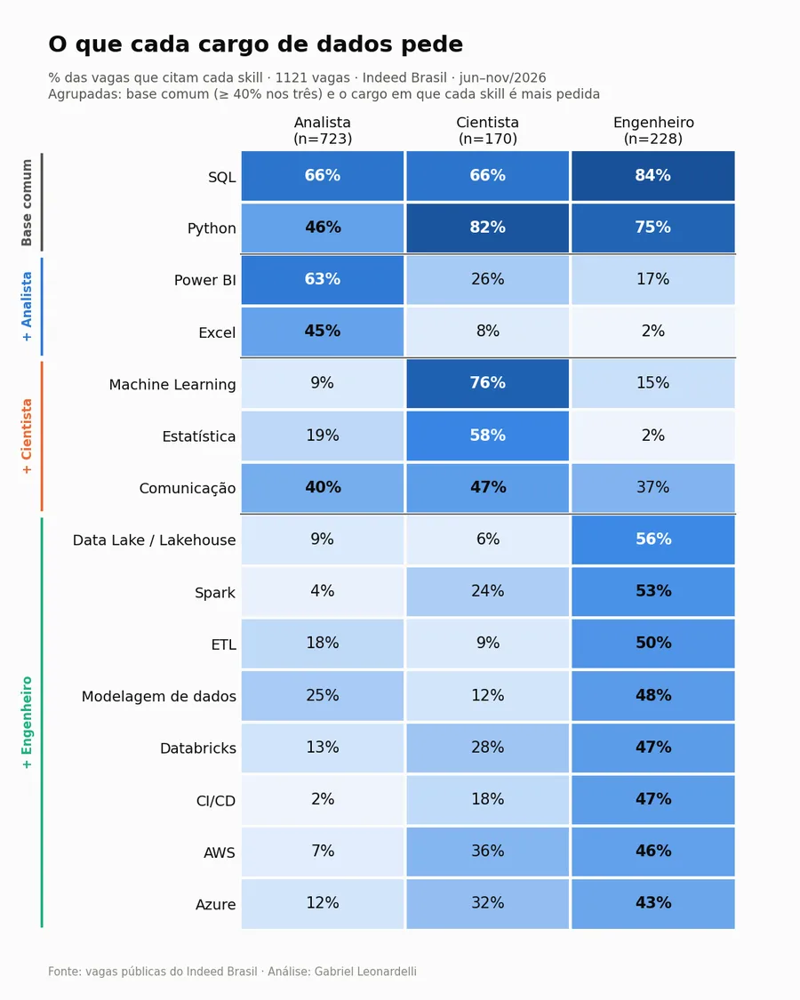
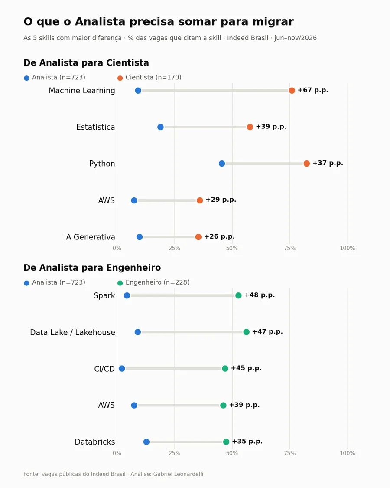

O que eu descobri
1 · Visão geral
Cada cargo tem uma "assinatura"
SQL e Python formam a base comum. Fora disso, cada cargo tem a sua marca: Power BI aparece em 63% das vagas de Analista, Machine Learning em 76% das de Cientista e Data Lake em 56% das de Engenheiro.

2 · O mapa completo
As skills agrupadas pelo cargo que mais pede cada uma
O que é só do Analista: Power BI (42 pontos percentuais acima da média dos outros dois cargos) e Excel (40 p.p. acima). Do Cientista: Machine Learning e Estatística. Do Engenheiro: Data Lake, Spark, ETL e CI/CD.

3 · Como migrar
O que o Analista precisa somar
Para virar Cientista, as maiores lacunas são Machine Learning (de 9% para 76% das vagas), Estatística (19% → 58%) e Python (46% → 82%).
Para virar Engenheiro, são Spark (4% → 53%), Data Lake (9% → 56%) e CI/CD (2% → 47%).

4 · Proximidade entre os cargos
Quem está mais perto de quem
Calculei a similaridade de cosseno entre os perfis de skills (de 0 a 1). O resultado de que o Analista está mais perto do Cientista se manteve em 4 variações do cálculo e em 98% de 300 reamostragens das vagas.
| Par de cargos | Similaridade |
|---|---|
| Cientista × Engenheiro | 0,73 |
| Analista × Cientista | 0,72 |
| Analista × Engenheiro | 0,68 |
Como eu fiz
- Coleta18 buscas no Indeed Brasil com termos de cada cargo e níveis júnior, pleno e sênior, somadas aos dados do meu projeto anterior (só para Analista).
- Limpeza e classificaçãoDe 15.133 vagas coletadas para 1.121. Classifiquei o cargo pelo título com regras de prioridade e excluí 88 cargos híbridos (AI Engineer, Analytics Engineer, MLOps etc.) que misturariam as áreas.
- ValidaçãoLi amostras de trechos de cada skill e de títulos de cada cargo. Isso corrigiu padrões, por exemplo "snowflake schema" sendo contado como a plataforma Snowflake.
- Análise47 skills detectadas por expressões regulares, perfil por cargo, base comum, skills características, similaridade de cosseno e testes de robustez.
Limitações: uma única fonte (Indeed Brasil); a amostra de Cientista é pequena (170 vagas); o título nem sempre reflete o trabalho real; e a busca por palavras não diferencia "obrigatório" de "diferencial".
Próximo projetoQuais skills o mercado pede para Analista de Dados?